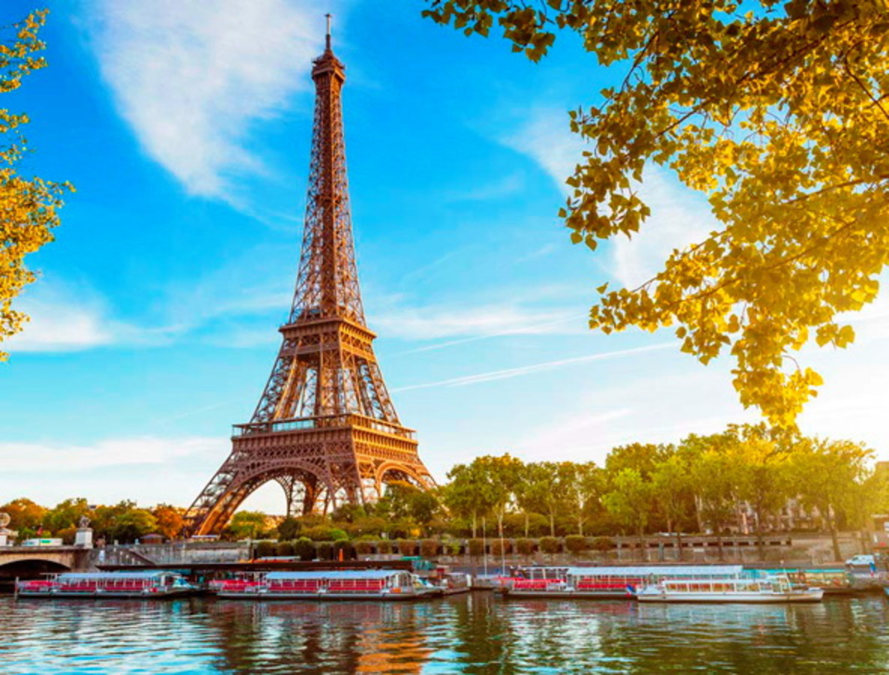

Париж

Ласкаво просимо до Парижа - міста кохання, мистецтва та елегантності!
Маршрут туру:
-
Ейфелева вежа
Наша подорож розпочнеться на одній з найвідоміших та найромантичніших споруд світу - Ейфелевій вежі. Ви підніметесь на верхній рівень вежі та насолодитесь чудовими видами на місто. -
Шамп-Елізе
Від Ейфелевої вежі ми вирушимо в сторону одного з найпрестижніших бульварів Парижа, Шамп-Елізе. Тут ви зможете відвідати розкошні бутіки, кав'ярні та ресторани. -
Тріумфальна арка
Пройшовши вздовж Шамп-Елізе, ми дістанемося до іконічної Тріумфальної арки. Ви зможете піднятися на верхній рівень арки та споглянути величність Парижу з висоти пташиного польоту. -
Лувр
На нашому маршруті ми відвідаємо одне з найвидатніших мистецьких музеїв світу - Лувр. Тут ви зможете побачити шедеври живопису, скульптури та історичні артефакти. -
Монмартр і базиліка Сакре-Кер
Після Лувру ми направимося до мальовничого району Монмартр. Ви підніметесь на пагорб та відвідаєте базиліку Сакре-Кер, звідки відкриються захоплюючі види на місто. -
Сена та прогулянка берегом
Ми завершимо наш тур прогулянкою вздовж річки Сена. Ви побачите такі архітектурні шедеври, як Катедраль Нотр-Дам та Музей Орсе, і зможете насолодитися красою паризьких набережних. -
Вуличні кафе Монмартру
Маршрут завершиться в одному з багатьох чудових вуличних кафе Монмартру, де ви зможете скуштувати справжню французьку кухню та відзначити вашу незабутню подорож.